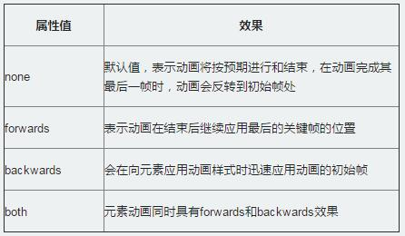

14、设置动画播放方式
animation-timing-function属性主要用来设置动画播放方式。主要让元素根据时间的推进来改变属性值的变换速率，简单点说就是动画的播放方式。
语法规则：
animation-timing-function:ease | linear | ease-in | ease-out | ease-in-out |cubic-bezier(<number>, <number>, <number>, <number>) [, ease | linear | ease-in | ease-out | ease-in-out | cubic-bezier(<number>, <number>, <number>, <number>)]* 它和transition中的transition-timing-function一样，具有以下几种变换方式：ease,ease-in,ease-in-out,ease-out,linear 和cubic-bezier。对应功如下：HTML: <div class="hh"><span></span></div> 让元素样式从初始状态到终止状态时，逐渐变慢css： .hh { width: 500px; height: 200px; border: 1px solid red; margin: 20px auto; } .hh span { display: inline-block; width: 20px; height: 20px; background: green; border-radius: 100%; animation-name:move; animation-duration: 10s; animation-timing-function:ease; animation-delay:.1s; animation-iteration-count:infinite; } @keyframes move { 0%{ transform: translate(0); } 15%{ transform: translate(100px,180px); } 30%{ transform: translate(150px,0); } 45%{ transform: translate(250px,180px); } 60%{ transform:translate(300px,0); } 75%{ transform: translate(450px,180px); } 100%{ transfrom: translate(480px,0); } } 结果：
15、设置动画开始播放的时间
animation-delay属性用来定义动画开始播放的时间，用来触发动画播放的时间点。和transition-delay属性一样，用于定义在浏览器开始执行动画之前等待的时间。
语法规则：
animation-delay:<time>[,<time>]*
HTML:
<div class="ii"><span></span></div>
让浏览器加载之后3s触发move动画css:
.ii {
width: 500px;
height: 200px;
border: 1px solid red;
margin: 20px auto;
}
.ii span {
display: inline-block;
width: 20px;
height: 20px;
background: green;
border-radius: 100%;
animation-name:move;
animation-duration: 10s;
animation-timing-function:ease;
animation-delay:3s;
animation-iteration-count:infinite;
}
@keyframes move {
0%{
transform: translate(0);
}
15%{
transform: translate(100px,180px);
}
30%{
transform: translate(150px,0);
}
45%{
transform: translate(250px,180px);
}
60%{
transform:translate(300px,0);
}
75%{
transform: translate(450px,180px);
}
100%{
transfrom: translate(480px,0);
}
}
结果：
16、设置动画播放次数
animation-iteration-count属性主要用来定义动画的播放次数。
语法规则：
animation-iteration-count: infinite |[, infinite | ]* 1、其值通常为整数，但也可以使用带有小数的数字，其默认值为1，这意味着动画将从开始到结束只播放一次。 2、如果取值为infinite，动画将会无限次的播放。 HTML: <div class="jj"><span></span></div> 让动画move无限次数的播放css: div { width: 500px; height: 200px; border: 1px solid red; margin: 20px auto; } div span { display: inline-block; width: 20px; height: 20px; background: green; border-radius: 100%; animation-name:move; animation-duration: 10s; animation-timing-function:ease; animation-delay:.1s; animation-iteration-count:infinite; } @keyframes move { 0%{ transform: translate(0); } 15%{ transform: translate(100px,180px); } 30%{ transform: translate(150px,0); } 45%{ transform: translate(250px,180px); } 60%{ transform:translate(300px,0); } 75%{ transform: translate(450px,180px); } 100%{ transfrom: translate(480px,0); } } 结果：
17、设置动画播放方向
animation-direction属性主要用来设置动画播放方向，其语法规则如下：
animation-direction:normal | alternate [, normal | alternate]*
其主要有两个值：normal、alternate
1、normal是默认值，如果设置为normal时，动画的每次循环都是向前播放；
2、另一个值是alternate，他的作用是，动画播放在第偶数次向前播放，第奇数次向反方向播放。
HTML:
<div class="kk"><span></span></div>
将动画move播放方向设置为alternate的css:
.kk {
width: 200px;
height: 200px;
border: 1px solid red;
margin: 20px auto;
}
.kk span {
display: inline-block;
width: 20px;
height: 20px;
background: orange;
transform: translateY(90px);
animation-name: move;
animation-duration: 10s;
animation-timing-function: ease-in;
animation-delay: .2s;
animation-iteration-count:infinite;
animation-direction:alternate;
}
@keyframes move {
0%{
transform: translateY(90px);
}
15%{
transform: translate(90px,90px);
}
30%{
transform: translate(180px,90px);
}
45%{
transform: translate(90px,90px);
}
60%{
transform: translate(90px,0);
}
75%{
transform: translate(90px,90px);
}
90%{
transform: translate(90px,180px);
}
100%{
transform: translate(90px,90px);
}
}
结果：
18、设置动画的播放状态
animation-play-state属性主要用来控制元素动画的播放状态。
参数：
其主要有两个值：running和paused。
其中running是其默认值，主要作用就是类似于音乐播放器一样，可以通过paused将正在播放的动画停下来，也可以
通过running将暂停的动画重新播放，这里的重新播放不一定是从元素动画的开始播放，而是从暂停的那个位置开始播
放。另外如果暂停了动画的播放，元素的样式将回到最原始设置状态。
HTML:
<div class="ll"><span></span></div>
让停止的动画在hover的时候播放，不是hover状态停止css:
div {
width: 200px;
height: 200px;
border: 1px solid red;
margin: 20px auto;
}
span {
display: inline-block;
width: 20px;
height: 20px;
background: orange;
transform: translateY(90px);
animation-name: move;
animation-duration: 10s;
animation-timing-function: ease-in;
animation-delay: .2s;
animation-iteration-count:infinite;
animation-direction:alternate;
animation-play-state:paused;
}
div:hover span {
animation-play-state:running;
}
@keyframes move {
0%{
transform: translateY(90px);
}
15%{
transform: translate(90px,90px);
}
30%{
transform: translate(180px,90px);
}
45%{
transform: translate(90px,90px);
}
60%{
transform: translate(90px,0);
}
75%{
transform: translate(90px,90px);
}
90%{
transform: translate(90px,180px);
}
100%{
transform: translate(90px,90px);
}
}
结果：
19、设置动画时间外属性
animation-fill-mode属性定义在动画开始之前和结束之后发生的操作。主要具有四个属性值：none、forwards、backwords和both。其四个属性值对应效果如下:
在默认情况之下，动画不会影响它的关键帧之外的属性，使用animation-fill-mode属性可以修改动画的默认行为。简单的说就是告诉动画在第一关键帧上等待动画开始，或者在动画结束时停在最后一个关键帧上而不回到动画的第一帧上。或者同时具有这两个效果。
HTML:
<div class="mm"></div>
元素背景色从红色变成蓝色css：
@keyframes redToBlue{
from{
background: red;
}
20%{
background:green;
}
40%{
background:lime;
}
60%{
background:yellow;
}
to{
background:blue;
}
}
.mm {
width: 200px;
height: 200px;
background: red;
margin: 20px auto;
animation-name:redToBlue;
animation-duration: 20s;
animation-timing-function: ease;
animation-delay: 1s;
animation-fill-mode: both;
}
结果：
第七章 布局样式相关
1、多列布局
多列布局columns属性参数主要就两个属性参数：列宽和列数。
- <column-width>主要用来定义多列中每列的宽度
- <column-count>主要用来定义多列中的列数
语法：
columns：<column-width> || <column-count>
HTML:
<div class="nn">
<h2>我要分列显示</h2>
<p>这是一段文字，这是一段文字，这是一段文字，这是一段文字，这是一段文字，这是一段文字，
这是一段文字，这是一段文字，这是一段文字，这是一段文字，这是一段文字，这是一段文字，这是
一段文字，这是一段文字，这是一段文字，这是一段文字，这是一段文字，这是一段文字，这是一段
文字，这是一段文字，这是一段文字，这是一段文字，这是一段文字。</p>
<p>这是一段文字，这是一段文字，这是一段文字，这是一段文字，这是一段文字，这是一段文字，
这是一段文字，这是一段文字，这是一段文字，这是一段文字，这是一段文字，这是一段文字。</p>
</div>
css:
.nn {
width: 500px;
padding: 5px;
border: 1px solid green;
margin: 20px auto;
-webkit-columns: 150px 3;
-moz-columns: 150px 3;
-o-columns:150px 3;
-ms-columns: 150px 3;
columns: 150px 3;
}
我要分列显示
这是一段文字，这是一段文字，这是一段文字，这是一段文字，这是一段文字，这是一段文字，这是一段文字，这是一段文字，这是一段文字，这是一段文字，这是一段文字，这是一段文字，这是一段文字，这是一段文字，这是一段文字，这是一段文字，这是一段文字，这是一段文字，这是一段文字，这是一段文字，这是一段文字，这是一段文字，这是一段文字。
这是一段文字，这是一段文字，这是一段文字，这是一段文字，这是一段文字，这是一段文字，这是一段文字，这是一段文字，这是一段文字，这是一段文字，这是一段文字，这是一段文字。
2、多列布局
column-width属性在定义元素列宽的时候，既可以单独使用，也可以和多列属性中其他属性配合使用。
语法：
column-width: auto | <length>
- auto
- <length>
如果column-width设置值为auto或者没有显式的设置值时，元素多列的列宽将由其他属性来决定，比如前面的示例就是由列数column-count来决定。
使用固定值来设置元素列的宽度，其主要是由数值和长度单位组成，不过其值只能是正值，不能为负值。
例子：
column-width:200px;
3、多列布局
column-count属性主要用来给元素指定想要的列数和允许的最大列数。
语法：
column-count：auto | <integer>
- auto
- <integer>
此值为column-count的默认值，表示元素只有一列，其主要依靠浏览器计算自动设置。
此值为正整数值，主要用来定义元素的列数，取值为大于0的整数，负值无效。
例子：
column-count：2
4、列间距
column-gap主要用来设置列与列之间的间距
语法：
column-gap: normal || <length>
- normal
- <length>
默认值，默值为1em（如果你的字号是px，其默认值为你的font-size值）。
此值用来设置列与列之间的距离，其可以使用px,em单位的任何整数值，但不能是负值。
例子:
column-gap: 2em;